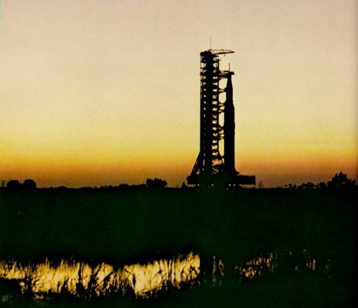

|  |
| By dawn's first light, a giant Apollo/Saturn V aboard its mobile launcher trundles toward ist rendezvous with the Moon. Riding its crawler past spaceport marshes, the rocket moves at about one mph. (During its voyage in space, a part of it containing men will travel at 24,300 mph.) Nothing of the size and power of this formidable creation had ever been built before. |